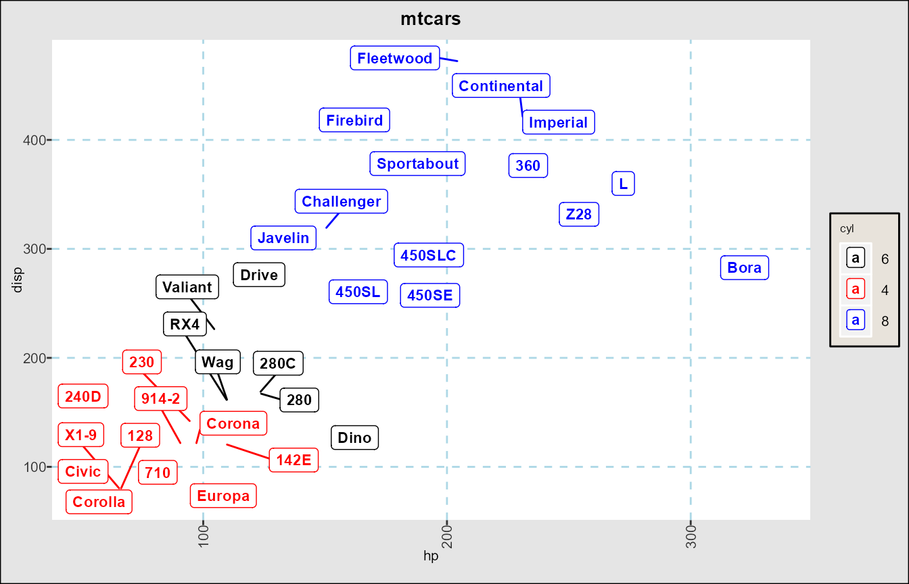
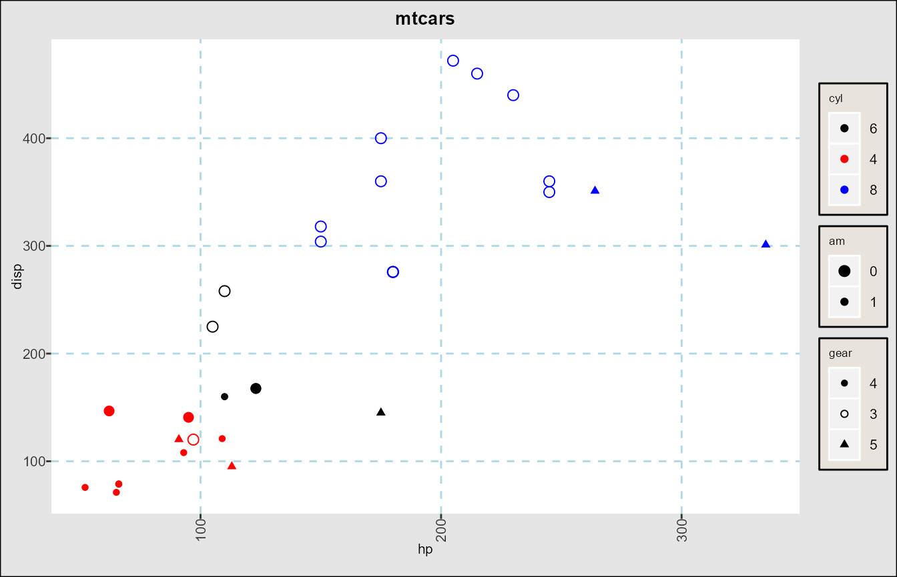
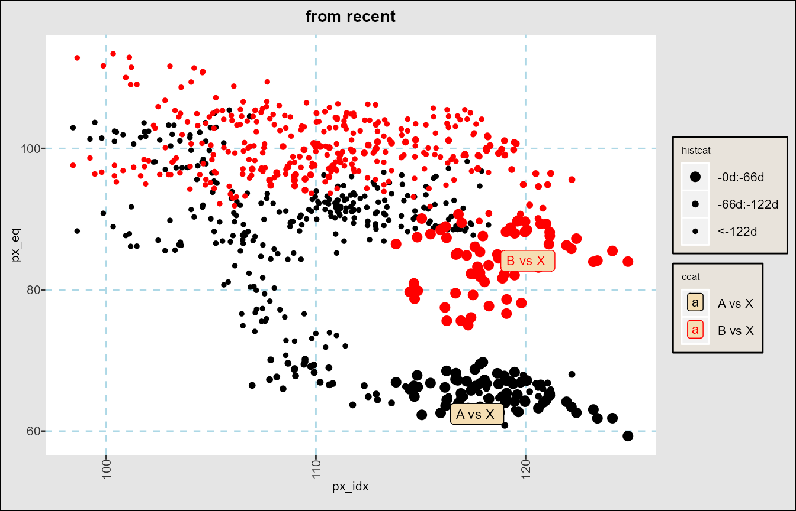
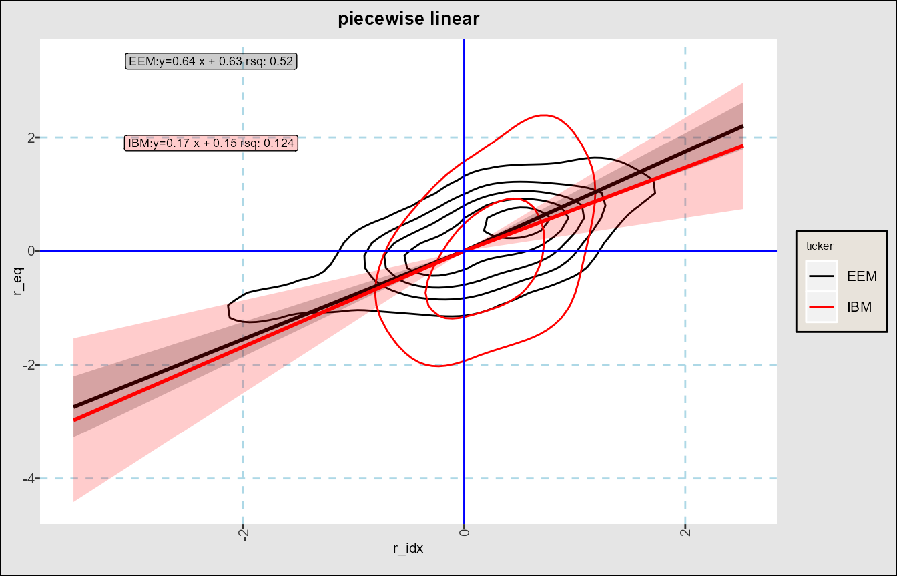
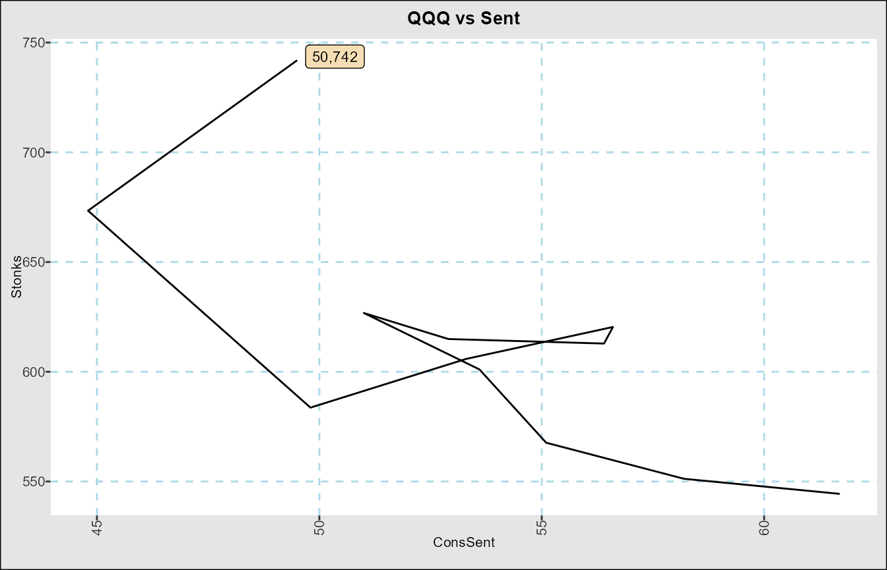
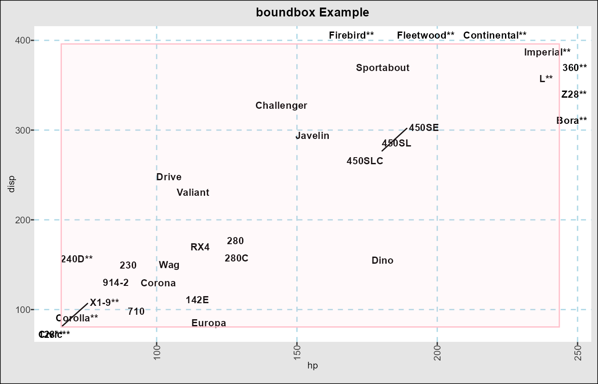
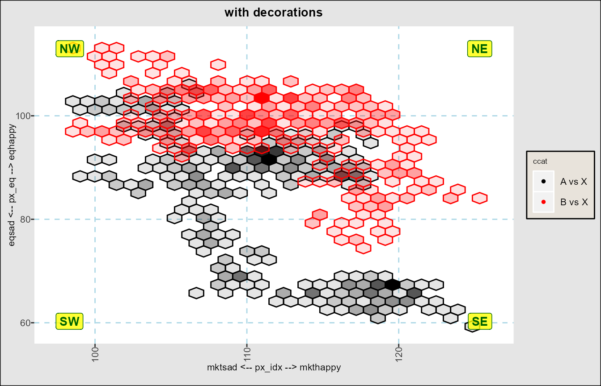
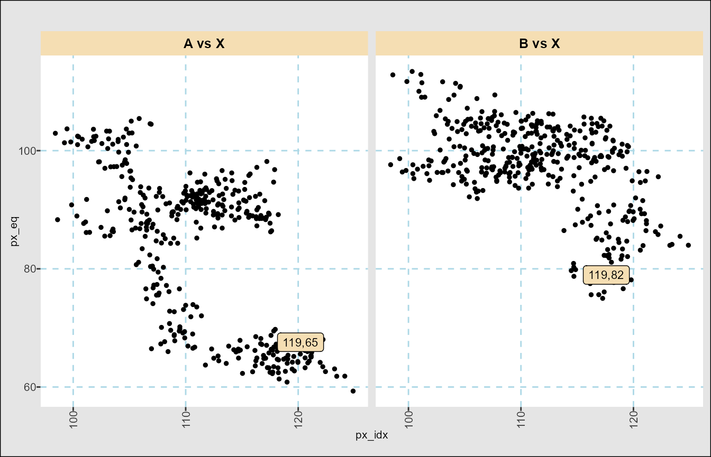
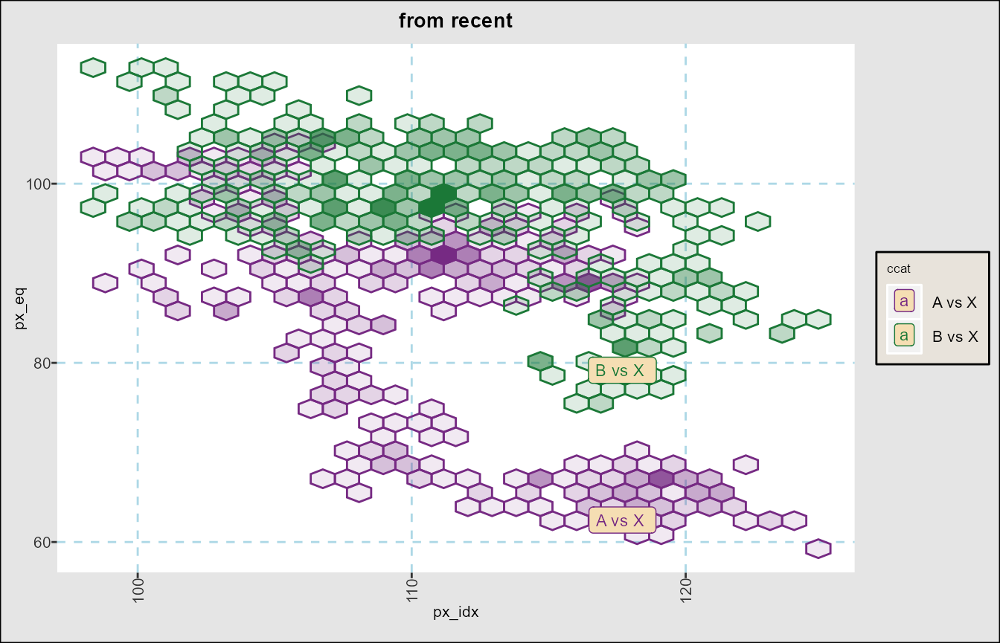

suppressPackageStartupMessages(require(dplyr))
suppressPackageStartupMessages(require(data.table))
suppressPackageStartupMessages(require(stringr))
suppressPackageStartupMessages(require(FinanceGraphs))Scatter Plots using fg_scatplot()
Scatter plots are one of the most useful ways of identifying relationships in financial data. Typically the plots are of two variables where the data points are ordered by time, which cannot easily be communicated statically. The goal of this function is to create graphs that bring time back into the graph, as well as give a new system for quickly getting the results desired.
R graphing packages are incredibly flexible and robust, but to really use them well requires (1) a learning curve for many different functions and parameters, and (2) necessarily a lot of code to get anything other than the simplest of graphs.
Distilling all those programmatic features can be done reasonably easily, but at the expense of almost as many paramters into a single wrapper function. For years, that was my approach, but here is an even more succinct approach: Customize graphs with simple formulas.
Describing components of scatter plot formulas
In addtion to the basic y ~ x needed to identify the two
variables to plot, additional customization can be added by associating
a column in the data set with each customization. Not all customizations
require a column, and sometimes we might want to add additional
information to the customization (aesthetic). The general format is:
y ~ x + <feature_1>:<column>,<aesthetic group> + <feature_2>:... + ...
The best way to see this is with a few examples of features using the
well-known mtcars data set.
Suppose we want to plot displacement disp vs horsepower
hp, but we want also to be able to identify individual cars
and color the labels by number of cylinders cyl. Suppose we
already have added the labels as a column id as below.
head(mtcars,2)
#> rn mpg cyl disp hp drat wt qsec vs am gear carb id
#> 1: Mazda RX4 21 6 160 110 3.9 2.620 16.46 0 1 4 4 RX4
#> 2: Mazda RX4 Wag 21 6 160 110 3.9 2.875 17.02 0 1 4 4 Wag
fg_scatplot(mtcars,"disp ~ hp + color:cyl + label:id","scatter",title="mtcars")
The next sections describe the features that can be added as terms to the input formula, by general category.
Aesthetic terms in plot formula
Each term is of the general form
aesthetic:<column>,<aestheticset> where the
(not always required) column is used to determine the levels of each
aesthetic. <aesthetic set> is described at the end of
the vignette. Individual points on a graph can always either just be
points or symbols, or have a text annotations per data point. Points can
be distinguished by
| Term | Parameters | Description |
|---|---|---|
color |
colname,<aesset> |
Color of each point or label from
levels of colname
|
size |
colname,<aesset> |
Size of each point from levels of
colname
|
symbol |
colname,<aesset> |
Symbol of each point from levels of
colname
|
To create text, you can use
| Term | Parameters | Description |
|---|---|---|
text |
colname,<aesset> |
Text in character column colname at each
x,y point. |
label |
colname,<aesset> |
Bordered label in character column
colname
|
labelhilight |
colname,<aesset> |
Filled in (and bordered) label |
tooltips |
colname |
Plot points, but with mouseover labels (1) |
(1): Refer to ggiraph for details.
Note that output from fg_scatplot must be displayed using
the girafe() function.
An admittedly too complex example of combining these together is
fg_scatplot(mtcars,"disp ~ hp + color:cyl + symbol:gear + size:am","scatter",title="mtcars")
Time Series related terms in the plot formula
Fortunately, there are many aesthetics with which we can use to
understand evoluation through time.
This package uses size, with larger points corresponding to more recent
data. This choice allows for multiple relationships to be shown at once.
The user specifies how to partition the data (from the last point) using
the datecuts parameter, and a doi (for Dates
Of Interest) parameter.
For the time based graphs, we first start with a simulated set of prices
for two equities and an index:
set.seed(1); ndates<-400
samp_rw <- function() { 100*(1+cumsum(rnorm(ndates,sd=0.2/sqrt(260)))) }
dts <- seq(as.Date("2021-01-01"),as.Date("2021-01-01")+ndates-1)
dttest_A <- data.table(date=dts,ccat="A vs X",px_idx=samp_rw(),px_eq=samp_rw())
dttest_B <- copy(dttest_A)[,let(ccat="B vs X",px_eq=samp_rw())]
dttest <- rbind(dttest_A, dttest_B)The following example compares two assets A and
B against an index and puts an label at the last data
points in the set.
fg_scatplot(dttest,"px_eq ~ px_idx + color:ccat + doi:recent + point:label","scatter",
datecuts=c(66,122),title="from recent")
All of the equation terms applicable to data sets with dates are:
| Term | Parameters | Description |
|---|---|---|
doi |
recent |
Partitions each time series by dates from the last
point, using datecuts
|
doi |
<doiset> |
Partitions each time series into date ranges specified
by fg_update_dates_of_interest()
|
point |
<value|label><all> |
Labels the last date by (x,y) coordinates or label |
all can be added to label last
observations in each color
category| |point|| Shows last values alongxandy`
axes |
Other terms in the plot formula
| Term | Parameters | Description |
|---|---|---|
ellipse |
Add a equal bivariate frequency ellipse | |
hull |
<:quantile> |
Add the convex hull of points after taking out
quantile points from center |
xline |
<:x><,color> |
Adds a vertical line to graph at x
|
yline |
<:y><,color> |
Adds a horizontal line to graph at y
|
grid |
<dotted|dotted_x|dotted_y|none> |
Style of background grids |
Graph types
Graph types are specified in the required type
parameter, and control what additional stats to show along
with a simple scatter (or density plot). With a few exceptions, the
graph type is composed of two parts added together in a string, (1) the
style that points will be shown and (2) additional stats to
statistically summarize the data. Point styles are
| Graph Type | Description | |
|---|---|---|
scatter |
Just plot (x,y) points or binned
hexagons |
|
density |
Plot points as unfilled density plot. | |
path |
Plot points joined together sequentially |
For density or scatter point styles,
summary regressions can be added with the following modifiers. Note that
just specifying the modifiers themselves implies a scatter plot if
possible.
| Graph Type | Optional Parameters | Description |
|---|---|---|
lm |
Add linear regression lines using tformula
per category (2) |
|
loess |
Add Loess best fits | |
<one> |
Add one linear or loess regression line using all data | |
<noeqn> |
Suppress showing the resulting fits | |
<nofill> |
Suppress confidence banks from shown regression lines |
(2): Levels used are the first among
(color,symbol,size,alpha)
specified in the plotform formula.
As a more complex example of how these can be put together, suppose
we want to find out if EEM and IBM have
different non-linear betas to QQQ. First we use a
poor-man’s pivot, then
dtrtn<- rbind(eqtyrtn[,.(date,r_eq=100*EEM,r_idx=100*QQQ,ticker="EEM")],
eqtyrtn[,.(date,r_eq=100*IBM,r_idx=100*QQQ,ticker="IBM")]) |>
narrowbydtstr("-1y::")
fg_scatplot(dtrtn,"r_eq ~ r_idx + color:ticker + xline:0 + yline:0","densitylm",
tformula="y~0+x:(x>0)",title="piecewise linear")
The path type is useful to understand the evolution of
two time series. For example, the past year of Stocks vs Consumer
Sentiment can be seen with
toplot = eqtypx[data.table(consumer_sent),on=.(date),roll=T] |> tail(n=12)
fg_scatplot(toplot,"QQQ ~ price + point:value","path",title="QQQ vs Sent",axislabels="ConsSent;Stonks")
Bounding Boxes and other details
Limiting the view port with bounding boxes
Many times there’s always an outlier in Financial Time Series,
especially in Credit trading. Outliers distort the graph, but removing
them needs to be done with some care.fg_scatplot() has three ways to deal with outliers. BY
default, (1) all data is shown, but a “bounding box” can also be
specified to narrow the view to the most relevant data. Data outside
that box can be either be (2) omitted, or (3) the preferred option of
showing the data at the edge of the box but with a clear notation that
it lies somewhere outside the box.
The two parameters to control this are boundboxtype and
boundbox. The bounding box can be specified as either
actual values of each axis, or quantiles of the data along each axis.
The options for the bounding box type are
| boundboxtype | Description |
|---|---|
value |
Omit any points outside the values of the bounding box |
valueidentify |
Squish the points into the box, noting if they are |
prob |
Omit any points outside the specified quantiles of the data |
probidentify |
Squish the points into the box, noting if they are |
Bounding boxes can either be lists of 2 or 4 numbers. A two digit list truncates both axes equally, while a 4 digit list truncates both lower and upper boxes of the data. More explicitly, the possibilities are:
boundboxtype |
boundbox |
Description |
|---|---|---|
value |
c(y_min,y_max) |
x axis is unrestricted, y limited to
[y_min,y_max] |
value |
c(x_min,x_max,y_min,y_max) |
x axis limited to
[x_min,x_max], y limited to
[y_min,y_max] |
prob |
c(q_x,q_y) |
x axis limited to [q_x,1-q_x] quantiles, y
to [q_y,1-q_y]
|
prob |
c(q_lx,q_ux,q_ly,q_uy) |
x axis limited to [q_lx,q_ux] quantiles, y
to [q_ly,q_uy]
|
The safest option in terms of seeing all the data is to have no
bounding box, but the next safest is to use probidentify,
as shown below.
fg_scatplot(mtcars,"disp ~ hp + text:id","scatter",title="boundbox Example",
boundboxtype="probidentify",boundbox=c(0.1,0.1))
Other annotations
Graphs sometimes require a lot of thought to understand what are the
implications shown by the data. One way to ease that communication is by
adding notes (annotations) to the four corners of the graph using the
annotatecorners parameter. You can also add an annotation
to the x axis using the semi-color separated parameter
xlabeldecoration as shown below.
fg_scatplot(dttest,"px_eq ~ px_idx + color:ccat ","scat",title="with decorations",
annotatecorners="NW;NE;SE;SW",
xdecoration="mktsad;mkthappy",ydecoration="eqsad;eqhappy")
Faceting
fg_scatplot() renames columns internally and uses only
the columns it really needs in the production of the plot. However,
there are times when a user would like to keep columns in the original
data with the ggplot object. This is particularly necessary
if any further faceting is desired. Faceting columns can be added using
the keepcols parameter as in
require(ggplot2)
#> Loading required package: ggplot2
fg_scatplot(dttest,"px_eq ~ px_idx + point:value","scat",keepcols="ccat") + facet_wrap(ccat ~ .)
Aesthetic customization
Managing a consistent look across graphs is not easy, as there are so many parameters that are possible to change. ggplot2 does a great job allowing every detail to be customized, especially with the use of themes. However, adding all those customizations are burdensome, and ad-hoc changes to them can involve a great deal of programming.
The functions in the package attempt to ease that burden with a
middle layer of named aesthetic groups. Internally, there is a
dataset that can be accessed with the function fg_get_aes()
and managed with fg_update_aes(). (See the accompanying
vignette for more detail.) For example, the default
colors of points used in fg_scatplot() are the same as
those used by the lines in fgts_dygraph() and are taken fro
the “lines” aesthetic set:
fg_get_aes("lines",n_max=3)
#> category variable type value const used helpstr
#> 1: lines D01 color black all Low cardinality line colors
#> 2: lines D02 color red all Low cardinality line colors
#> 3: lines D03 color blue all Low cardinality line colorsThe list of aesthetic sets used internally in each function can be
seen by running fg_print_aes_list() to return the names
used internally and explanations. To see what aesthetic sets are used
for any given plot, turn on verbosity using fg_verbose().
There are 23 categoeies used in fg_scatplot(), and the
first five are:
fg_print_aes_list("fg_scatplot") |> head(n=5)
#> [1] "|category |helpstr |default | N|"
#> [2] "|:----------------|:-----------------------------------------|:-----------|--:|"
#> [3] "|lines |Low cardinality line colors |black | 14|"
#> [4] "|corner_anno |Text Color of corner annotation |darkgreen | 3|"
#> [5] "|doisizemult |doi recent size multipliers |2.5 | 7|"Any of these can be customized across calls to the functions and
invocations of the package using fg_update_aes() You can
also add new sets you might wish to use independently and then use them
in invidual function calls with the aesset added as in the
options above. For example, in the default aesthetic set there’s one
called "altlines_6" which is shown below with an example of
how to use it. Note that there are enough observations to kick the point
display to the binned format.
head(fg_get_aes("altlines_6"),2)
#> category variable type value const used helpstr
#> 1: altlines_6 D01 color #762a83 PRG6
#> 2: altlines_6 D02 color #1b7837 PRG6
fg_scatplot(dttest,"px_eq ~ px_idx + color:ccat,altlines_6 + point:label","scatter",title="from recent")
User-customized themes are also always possible. You can just add an
alternte theme directly onto the call such as
fg_scatplot(...) + theme_bw() or replace the theme used in
these graphs via fg_replace_theme(). See accompanying
vignette.